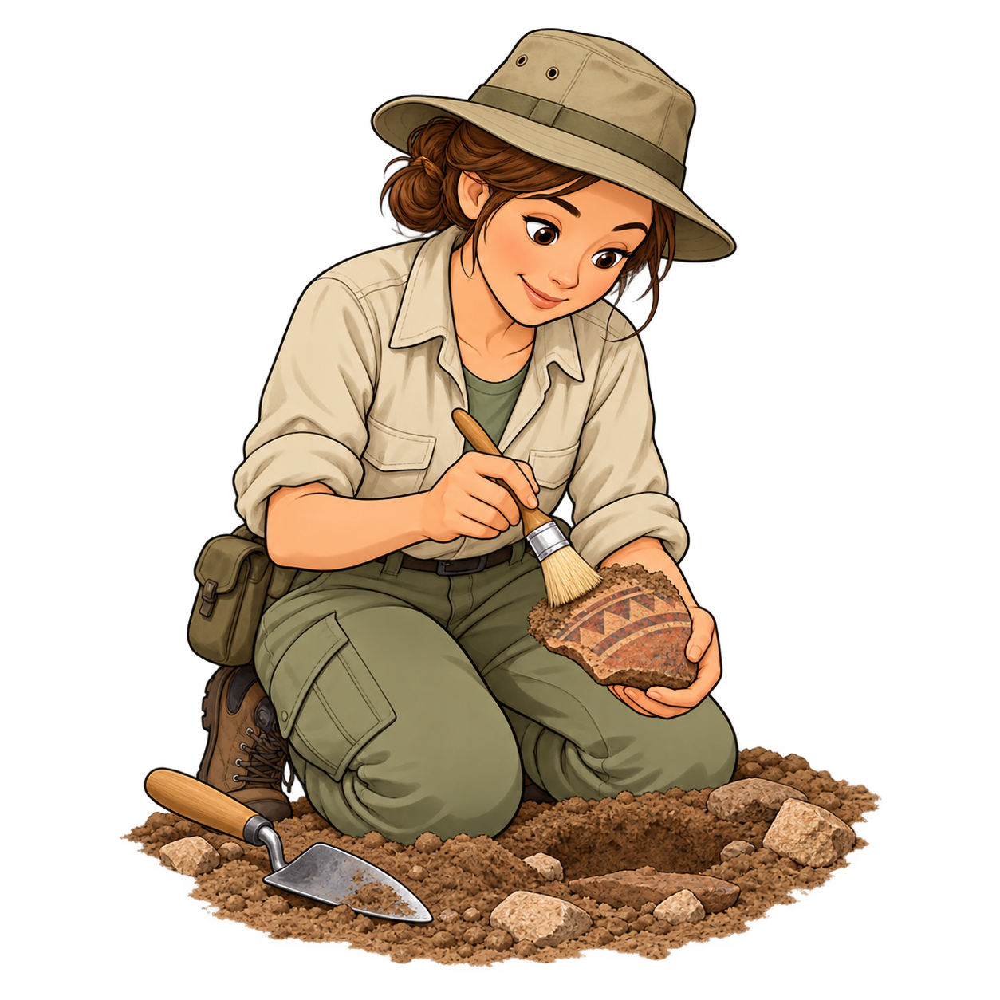

← Alle thema’s
← Oefeningen
WERELDKANJERS 1 · THEMA 3
Tijd
Voor de leerkracht

Ik oefen
Tijd
Tik op een luidspreker. Die leest voor jou.
🔊 Luister
🖼️ Kijk en luister naar de woorden
🔊
↶ Opnieuw
Volgende →
Kijk en luister